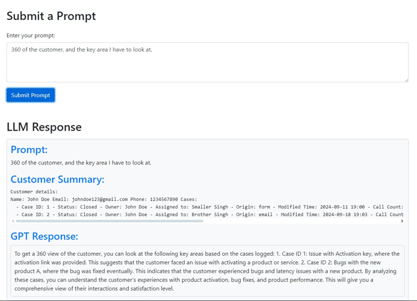
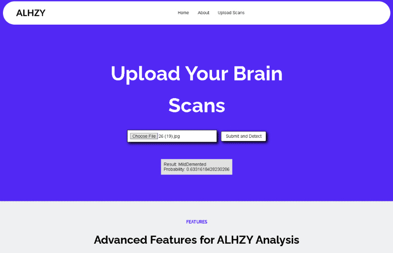
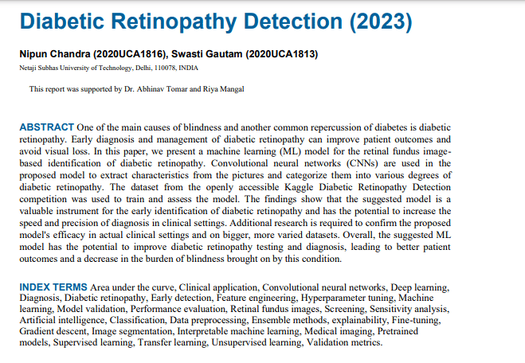

Get started
My Projects
Next Gen Agent
GPT-3.5 turbo, LLM, API, Python, Flask
Alzheimer's Detection
Alzheimer's, Python, Tensorflow, EfficientNet
Diabetic Retinopathy Detection
Diabetic Retinopathy, Tensorflow, Deep Learning
Revolutionizing Case Management with GenAI and LLMs
Manage cases with the NextGen Agent, a solution powered by
GPT-3.5-turbo. This platform integrates five core modules to
deliver automated insights, streamlining customer service
operations and eliminating repetitive manual tasks. With a
sleek Flask-based UI and robust database management using
PostgreSQL, this agent takes case management to the next
level. The AI-driven insights feature ensures efficiency by
automating case updates and delivering structured responses.
Explore more ->

Accuracy Meets Innovation in Alzheimer's Prediction
Introducing ALHZY, an online platform that detects
Alzheimer's Disease with 99.7% accuracy. Leveraging the
EfficientNetB3 model, this project achieves high performance
while reducing computational complexity by 20% compared to
industry standards like VGG-16. Trained on a diverse dataset
of 5,000+ medical images, it offers unmatched precision and
reliability in Alzheimer's detection.
Explore more ->

Advanced Eye Health Diagnosis with CNN Models
Tackle diabetic retinopathy with a state-of-the-art
Convolutional Neural Network (CNN) that achieves an
impressive accuracy of 93.45%. Trained on 2,562 retinal
images and validated on 550 images, this model identifies
early signs of retinopathy with precision. By combining
TensorFlow and deep learning techniques, this project
advances eye health diagnostics to deliver impactful
solutions.
Explore more ->

Why you should Hire Me?
Let me break it down for you:
Tech-Savvy Creator
I design and build smart solutions
I've built cool stuff like a GUI to manage 100+ AVs and an AI model with 99.7% accuracy in Alzheimer's detection. I'm into Generative AI, Python, and TensorFlow—basically, I know how to get things done with the latest tech.
I thrive on teamwork
Whether it's crunching 10,000+ lines of data or fine-tuning AI models, I make things work while keeping it collaborative. I'm all about solving problems and bringing fresh ideas to the table.
I build and lead communities
Co-founded a social media management firm, leading a community of 1k+ people and serving 30+ happy customers from influencers to content creators. This experience has honed my ability to understand diverse needs and deliver results that matter.
What's my story so far?
Executive, Marketing
Built a web scraping pipeline to automate tender discovery, cutting manual effort by 50%. Integrated LLM-powered document generation, reducing proposal drafting time by 60%. Developed Python and SQL-based bid tracking tools, improving success rate evaluation. Registered vendor for Bharat Electronics Limited, boosting high-value tender wins by 20%.
Intern, Cyber Security
Conducted penetration testing and network security analysis using Wireshark and Kali Linux. Optimized RDP and VPN setups, improving remote connectivity by 30%. Researched identity theft and phishing, contributing to improved threat detection.
Bot Development, Co-Founder
Created automated moderation bots and managed 100+ Discord communities. Designed and secured servers for 30+ clients, integrating custom bots and APIs. Improved social media engagement by 60% using data-driven strategies.
Research Intern
I crunched through 10,000+ lines of Air Force data with NumPy, Pandas, and Seaborn to uncover key trends. Built a sleek, custom GUI from scratch to monitor and manage 100+ autonomous vehicles, making sure nothing goes rogue. Feature engineered 10+ research papers to cook up a fresh method for training ANNs, leveling up neural network performance overall. And to top it off, I used deep learning magic (ANNs and Decision Trees) to spot and classify hazards, hitting 98% accuracy—basically, I made the machines smarter.
SKILLS
What I bring to the table?
Technologies:
Generative AI, Large Language Models, Machine
Learning, Artificial Intelligence
Programming Languages:
C++, SQL, HTML, CSS, Python
Frameworks and Tools:
TensorFlow, Flask, Streamlit, NumPy, Pandas
MS Office Suite, SQLite, Qt 5, Salesforce
MS Office Suite, SQLite, Qt 5, Salesforce
Frequently asked questions
Who are you?
I'm Nipun Chandra, a B.Tech graduate specializing in AI,
with a passion for creating innovative tech solutions. My
expertise lies in Generative AI, Machine Learning, Python
and C++.
What inspires your work?
I love solving real-world problems using technology and
AI. The sense of helping people out in my own way inspires
me the most and motivates me to keep going.
What are your key technical skills?
I specialize in Generative AI, LLM, RAG, Python, C++ and
SQL. I also have experience in frameworks like NumPy,
Pandas, and tools such as Qt 5, PostgreSQL and Salesforce.
What makes you unique as a developer?
My ability to combine technical expertise with
creativity sets me apart. From building AI models with
99.7% accuracy to designing user-friendly interfaces, I
focus on both innovation and execution.
Are you open to collaboration?
Yes! I'm always looking for opportunities to collaborate
on projects that push the boundaries of technology and
help me grow as an Engineer and a human being.